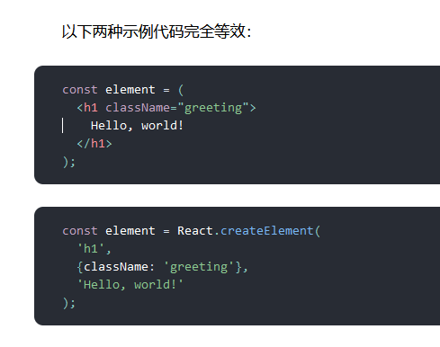
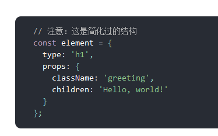

1.jsx概述
1. 定义
const element = h1> Hello, world! /h1>; 这种标签语法既不是JavaScript字符串也不是 HTML,
而是在js中书写html标签的语法就被称为:JSX,它是 JavaScript 语法扩展的意思。
JSX 的作用是用来生成一个 React “元素”,然后react会将这些元素渲染为页面中的真实DOM、
也就是说通过jsx语法可以直接在js里写html标签而不是使用之前的createElement()方法来生成React “元素”。
可以在 if、for语句中使用jsx、也可以参数传递给函数或者作为函数的返回值使用。
2.注意事项
注意: 因为 JSX 语法上更接近 JavaScript 而不是 HTML,所以 React DOM 是使用 camelCase(小驼峰命名)来定义属性的名称,而不使用 HTML 属性名称的命名约定。
同时跟vue类似也必须有一个根元素包裹(元素很多时可以用圆括号-() 括号包裹表示为一个整体)、然后里面可以嵌套多个子元素。
例如,JSX 里的 class 变成了 className,而 tabindex 则变为 tabIndex
注意:也是只能有一个根元素,原生html标签小写、react组件大写
3.使用变量
在 JSX 语法中,你可以在大括号 {//js表达式} 内放置任何有效的 JavaScript 表达式、注释等。
{} 类似vue的插值表达式,用来输出简单的js表达式/变量等。
不同在于react中当表达式值为空值、undefined、布尔值时不显示任何内容。
内联样式要使用对象设置即: style='{{ width:'100px'}}'
注释:{/* 注释内容 */}
4.本质
本质是:Babel 会把 JSX 转译成一个名为 React.createElement() 函数调用最终生成的一个虚拟dom、也就是说JSX就是React.createElement()方法的语法糖。
最终经过React.createElement()方法转换成一个JavaScript对象(就是虚拟DOM)。

React.createElement() 方法会预先执行一些检查,以帮助你编写无错代码,但实际上它创建了一个这样的对象:

这些对象被称为 “React 元素”,也就是虚拟dom,最终被react渲染到页面中的内容。